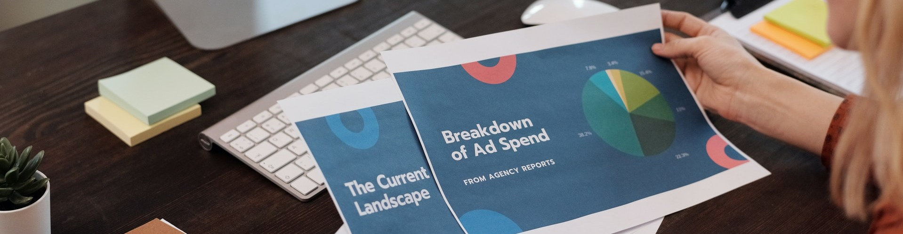

<!-- <div id="carouselControls" class="carousel slide" data-ride="carousel">
  <div class="carousel-inner">
    <div @fade class="carousel-item active">
      
    </div>
    <div @fade class="carousel-item">
      
    </div>
  </div>
  <a
    class="carousel-control-prev"
    href="#carouselControls"
    role="button"
    data-slide="prev"
  >
    <span class="carousel-control-prev-icon" aria-hidden="true"></span>
    <span class="sr-only">Previous</span>
  </a>
  <a
    class="carousel-control-next"
    href="#carouselControls"
    role="button"
    data-slide="next"
  >
    <span class="carousel-control-next-icon" aria-hidden="true"></span>
    <span class="sr-only">Next</span>
  </a>
</div> -->

<div class="container">
  <div class="row p-4">
    <div class="col-xl-12 text-center">
      <h1 class="m-4 mainHeader">Ambedkar Community Computing Center (AC3)</h1>
    </div>
    <div class="col-xl-12 text-center">
    <p>
    The community computing center is an empowerment initiative, headed by the common people, started in the year 2007 to bridge the widening digital divide using Free Software.
     Computer classes are conducted for everyone, of all walks of life, by the volunteers, who have been the students of AC3 with the support of FSMK volunteers.
    <br>
    In this modern world computers and knowledge of technology alike plays an important role. With the ever growing integration of technology into daily life, lack of that technological knowledge becomes critical for survival.
     The motto of our AC3 center is “Every common individual needs to have that computer knowledge, to share and follow the philosophy of Free Software”.We are not only confined to the subject of computers but also conduct other activities such as science, mathematics, spoken language and psychological dance therapy.
    <br>
    Our focus is to further discuss and interact about the social issues such as Right to Education (RTE), make sure school dropouts are sent back to school etc., and equip themselves such that they contribute back to society.
     Since the center focuses on emotional intelligence, we teach people to dance, enact dramas, and sing to get the best of their personalities. In addition to the activities mentioned above, we also release a monthly magazine, started on April 2017, written and edited using Free Software by the students of AC3.
    <br>
    We have also started a library on AC3 Annual Day Celebration, April 2018 thanks to SFLC, FSMK volunteers, and AID. The library was started with the intention to provide access to knowledge and help people share the same. This is the first step to achieve our goal i.e. to showcase our talent and knowledge to the world.

    <p style="padding-bottom: 30px;">Currently, the center is run by Vinod Kumar and Renuka with the assistance of other students.
      </p>
    </div>
  </div>
</div>
